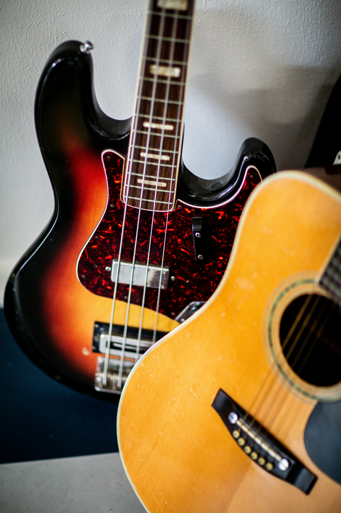
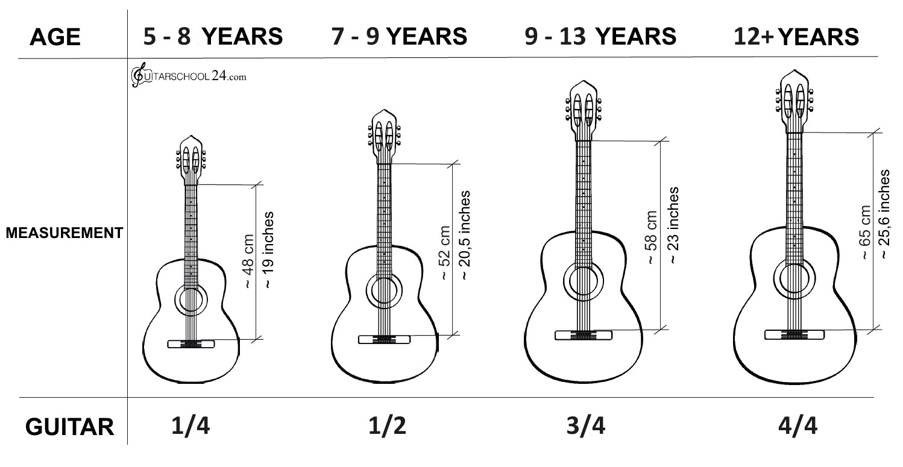

Как выбрать гитару?

Как выбрать гитару: советы для начинающих
Итак, ты решил научиться играть на гитаре, и это круто! Но перед тем как начать разучивать свои первые аккорды, тебе нужно выбрать правильный инструмент. Давай разберемся, как не прогадать с выбором и не купить себе проблему.
Размер имеет значение
Да-да, гитары бывают разных размеров. Если ты еще не вымахал до двух метров, то тебе подойдет гитара 3/4 или 1/2. Это уменьшенные версии, которые идеально подходят для подростков.

Проверь гитару перед покупкой
Когда ты придешь в магазин, не стесняйся проверить гитару:
- Возьми гитару и сыграй несколько аккордов на всех ладах. Если слышишь дребезжание, возможно, у нее проблемы с грифом.
- Совет: Попроси продавца настроить гитару перед проверкой.
Расстояние от струн до грифа (высота струн)
- Высота струн над грифом должна быть комфортной. Если струны слишком высоко, тебе будет сложно зажимать аккорды.
- Проверь расстояние на 12-м ладу: оно должно быть около 3–4 мм для шестой струны и 2–3 мм для первой.
- Если струны "лежат" на грифе, это тоже плохо — звук будет глухим.
Ровный гриф
- Посмотри вдоль грифа от головы к корпусу. Он должен быть ровным, без изгибов.
- Если гриф кривой, гитара будет плохо звучать, и играть на ней будет неудобно.
Проверка звука
- Сыграй на гитаре несколько нот и аккордов. Звук должен быть чистым и ярким, без "деревянного" или "металлического" призвука.
- Проверь, как звучат открытые струны (не зажатые) и струны на высоких ладах (12-й и выше). Звук должен быть одинаково качественным на всех участках грифа.
Внешний вид
- Посмотри на корпус: нет ли трещин, царапин или клея, который торчит, как будто гитару собирали в темноте.
- Подергай струны: они должны звучать чисто, без дребезжания.
- Покрути колки: они должны легко вращаться, но при этом держать строй.